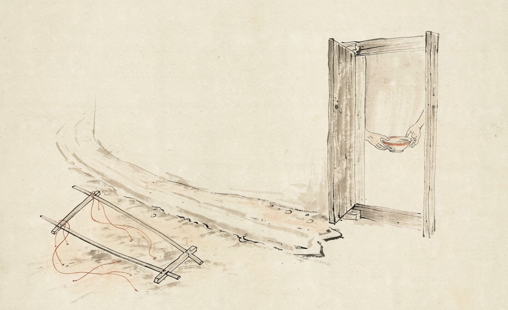
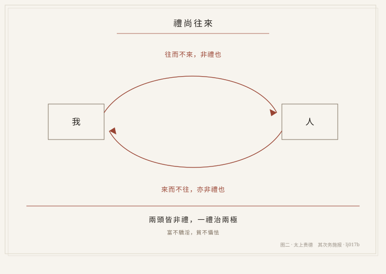

曲礼上 · 一·十八 · 第 17 课
这一节忽然换了语气：前十六节讲礼之当然，此节讲礼之所从来。它先给两个世道，再给一条规矩，最后给两句断语。
说什么事：太上之世贵德，施而不求报；其次之世务施报，礼于是兴。礼尚往来，往不来、来不往皆非礼；人有礼则安，无礼则危，故礼不可不学。礼者自卑而尊人，虽负贩必有尊；富贵好礼则不骄不淫，贫贱好礼则志不慑。
落在哪一层：义，兼史。这是全篇唯一一段讲「世变」的文字。
为何编在此位：一·十七说人禽之别，划到底线；此节回头说这条线是怎么立起来的——不是天生，是「其次」之世才「礼始兴焉」。
【经】太上貴德，其次務施報。禮尚往來，往而不來，非禮也；來而不往，亦非禮也。人有禮則安，無禮則危，故曰禮者不可不學也。夫禮者，自卑而尊人，雖負販者，必有尊也，而況富貴乎？富貴而知好禮，則不驕不淫；貧賤而知好禮，則志不懾。
太上 郑注：「太上，帝皇之世，其民施而不惟报。」疏：「太上谓三皇五帝之世也。」「惟，思也」——施而不思其报。
贵德 疏：「其时犹淳厚其德，不尚往来之礼，所贵者在于有德。」
其次 郑注：「三王之世，礼始兴焉。」疏：「独亲其亲，独子其子，货力为己，施则望报。」
务施报 务，专力于此。施则望报，以此为恒事。
尚往来 尚，主也。疏：「言三王之世，其礼主尚往来。」
安、危 安，相安；危，相侵。礼为相处之器，非为一人之饰。
自卑而尊人 卑，自居下位，非自贬；尊人，推高于人。
负贩 担货贩卖者。郑注：「负贩者尤轻恌志利，宜若无礼然。」——最像无礼的人。
骄淫 骄，慢人；淫，纵己。
慑 郑注「慑犹怯惑」；何胤「惮所行为怯」。疏：「贫者之容，好怯惑畏人，使心志不遂。」
太上之世看重德行，人施与而不思回报；到了其次之世，才专意于施与回报。礼主于往来：往而不来，是非礼；来而不往，也是非礼。人有礼则彼此相安，无礼则彼此相危，所以说礼不可不学。礼这件事，是把自己放低而把人抬高；即使是担货贩卖的人，也有他可尊之处，何况富贵之人？富贵而好礼，就不骄慢不纵欲；贫贱而好礼，心志就不怯惑。
礼起于「报」，成于「往来」，用于「安」，而归于「自卑而尊人」。此节四层，一层比一层低，低到负贩者身上，才是礼的实处。
第一层 「施而不惟报」是一种世象，不是一个理想 郑注只一句「其民施而不惟报」，「惟」训「思」。太上之世不是人人都圣，是那时还不需要算报——施了就施了。疏补一句极准：「其时犹淳厚其德，不尚往来之礼。」不尚，不是不许，是还没到要用礼来维系的地步。读此句最易滑向厚古薄今；其实经文只说「贵德」，未说「贵德者善」。
第二层 「礼始兴焉」四字的分量 郑注于「其次务施报」下注：「三王之世，礼始兴焉。」这是全篇最要紧的一条史观：礼不是从德衰后的堕落里生出来的，是从「报」这件事里生出来的。有了施报，才有往来；有了往来，才需要礼。故礼之兴，兴于人事之繁，不兴于人心之坏。今日动辄说「礼崩」，此节正可解：礼从来不曾在「无报」的世道里存在过。
第三层 两个「非礼」 「往而不来，非礼也；来而不往，亦非礼也。」四句两两相对，一句也不放过对方。今日多只责前者——我付出了你没回；少责后者——你给了我不要。而后一句其实更常犯：受而不报，等于把对方降为施舍者。礼尚往来之「尚」，正在这一来一往都不许悬空。
第四层 安危与不可不学 「人有礼则安，无礼则危。」礼在此不是仪表，是安全设施。一人无礼，危在一身；众人无礼，危在一群。故下一句不说「可学」，说「不可不学」——四字是硬话，不是劝语。
第五层 自卑而尊人，低到负贩 全节之纲在此七字。卑不是自贬，是把位置让出来；尊人不是奉承，是承认对方有其可尊。经文随即举一个最极端的例子：负贩者。郑注说得冷：「尤轻恌志利，宜若无礼然。」——最像不讲礼的人，也有其尊。故礼不择人，不因贫富设门槛。
第六层 一礼治两极 末二句把礼分给两种人：富贵者病在骄淫，礼治其慢；贫贱者病在慑怯，礼治其怯。同一礼，一头压，一头扶。压的是骄，扶的是志。此节收尾之所以不再说「安」「危」而说「志」，是因为贫者的危不在身，在心。
与今日何干 今日论人情往来，多算一头：我给了多少，你回了多少。此节给的是双向账，且把最轻的人也算进去。至于「自卑而尊人」，今日多被读成职场话术；经文原意相反——卑是让位，不是姿态。
| 左 | 右 |
|---|---|
| 太上贵德：施而不惟报 | 其次务施报：三王之世，礼始兴焉 |
| 往而不来，非礼也 | 来而不往，亦非礼也 |
| 人有礼则安 | 无礼则危，故不可不学 |
| 自卑而尊人：负贩亦有尊 | 富贵好礼则不骄淫 |
| 贫贱好礼则志不慑 | 一礼治两极：压骄，扶志 |

